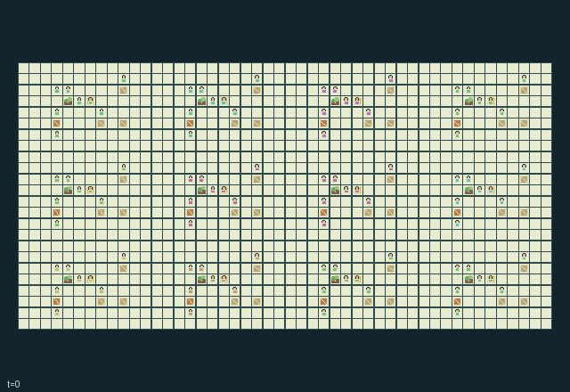

GI251 · Orchard Lantern Commons

Deliver eight fruit units for each household while preserving orchard growth, shared pollination and fragile transport. Individual baskets and cooperative racks offer different schedules and infrastructure needs.
Identity and original contract
96 independently actionable roles; 20 discrete commands per role; 297 native observation columns per role; original horizon 896 steps. Declared per-step reward range: -2 to 8. Observation regime: partially_observable.
Source SHA-256: 0009f3127bcf22d1817749f1b520c0c3cb48e0ae37e4c1107d433518ebc2e595
The objective, rewards, population, map and horizon remain original. A preview is not a success claim.
Objective and gameplay
Deliver eight fruit units for each household while preserving orchard growth, shared pollination and fragile transport. Individual baskets and cooperative racks offer different schedules and infrastructure needs.
Pruning removes current fruit and opens a tree cell while improving a paired neighboring plot sunlight. Moving a hive reallocates its single pollination target; lamps divert nearby bees. Two carriers move a rack while another braces its bridge or holds its cold-store door.
- 96 independent villagers belong to twelve households. Hives are ecological objects, never extra agent rows.
- Prune to gain timber and open a tree cell, but lose current fruit. The paired neighboring orchard gains sunlight for later growth.
- Harvest ripe fruit, graft with a fruit sacrifice, irrigate a paired neighbor, or repair weather damage with timber. Growth occurs on eighth-step boundaries.
- A beekeeper can lift and relocate a physical hive. Each uncarried hive serves one nearby orchard; a nearby lit lamp distracts it.
- A north and south carrier must agree to move a rack. A third person braces the bridge or holds the cold-store door; a repaired bridge provides a persistent alternative.
- Night lamps protect moving rack quality, while drawing bees away. Hand baskets may use the market; racks sell through the held cold-store door.
- Warm orchards, timber racks and lanterns form an original rural scene. Native execution, animation, learning and human play remain unmeasured.
Ending: Joint natural completion when every household sales ledger reaches eight fruit units. Otherwise H=896 ends the season; ecological hives and fixtures are never extra controllable agents.
What this game explores
Resource commons & externalities: An action changes a persistent resource or burden that another role also encounters. Compare extraction with maintenance and record the downstream resource trajectory.
Commitment, exchange & governance: Promises consume time, liquidity, access or material. Separate an announced agreement from a binding commitment and from its eventual delivery; log cancellation and expiry too.
Complementary production & service: A useful outcome requires ordered stages, scarce equipment or another role's capability. Measure real completed products and resource circulation rather than counting intermediate actions as success.
Joint transport & shared access: Positions, load geometry, occupancy and persistent access constrain whose action can succeed next. Distinguish physical handoff, shared controls and simultaneous force from a cosmetic cooperation label.
Survival, protection & rescue: Protection and repair alter another role's future feasible actions. Record losses, exposure, rescue and infrastructure as well as delivery; survival is determined by the actual kernel.
These are questions supported by rule structure, not observed learning effects.
Play it: operating walkthrough
crucibles play --game gi251Keep Python running and open its printed address. Select this game, set a seed and press Create session. The game itself is always English.
Assign a role range to Host with Assign / take over, or Assign all roles. Invite a second participant with Create player invitation, then assign a disjoint subset. Every original role is available.
For every owned role choose a legal command and press Queue. Arrow keys / WASD queue a declared directional action for the current role camera when available. Space or Advance one joint step advances everyone together. Non-directional games use the selectors.
Unqueued roles use the labelled untrained uniform-legal policy. Take over or release roles before the next step without resetting. Full-state debug is privileged and permanently logged; role cameras preserve permissions. Close the session to retain logs. Server restart does not restore sessions.
Complete command reference
IDs and English labels exactly match the manifest. Availability depends on role, resources, location and phase. An available action can still have no productive effect.
0·Wait
1·North
2·East
3·South
4·West
5·Prune canopy
6·Tend damaged tree
7·Harvest ripe fruit
8·Graft new variety
9·Toggle irrigation
10·Lift or drop hive
11·Carry rack east
12·Brace bridge or hold door
13·Carry rack west
14·Load harvest rack
15·Repair footbridge
16·Offer tool exchange
17·Toggle night lamp
18·Sell basket or stored rack
19·Read or share forecast
Roles and capability identifiers
These original role names describe capabilities, not interchangeable skins. Check each owned role's legal selector before planning handoffs.
agent_0·household 0: rack carrier/bracer; independently controllable
agent_1·household 0: rack carrier/bracer; independently controllable
agent_2·household 0: rack carrier/bracer; independently controllable
agent_3·household 0: rack carrier/bracer; independently controllable
agent_4·household 0: pruner; independently controllable
agent_5·household 0: grafter; independently controllable
agent_6·household 0: beekeeper; independently controllable
agent_7·household 0: rack carrier/bracer; independently controllable
agent_8·household 1: rack carrier/bracer; independently controllable
agent_9·household 1: rack carrier/bracer; independently controllable
agent_10·household 1: rack carrier/bracer; independently controllable
agent_11·household 1: rack carrier/bracer; independently controllable
agent_12·household 1: pruner; independently controllable
agent_13·household 1: grafter; independently controllable
agent_14·household 1: beekeeper; independently controllable
agent_15·household 1: rack carrier/bracer; independently controllable
agent_16·household 2: rack carrier/bracer; independently controllable
agent_17·household 2: rack carrier/bracer; independently controllable
agent_18·household 2: rack carrier/bracer; independently controllable
agent_19·household 2: rack carrier/bracer; independently controllable
agent_20·household 2: pruner; independently controllable
agent_21·household 2: grafter; independently controllable
agent_22·household 2: beekeeper; independently controllable
agent_23·household 2: rack carrier/bracer; independently controllable
agent_24·household 3: rack carrier/bracer; independently controllable
agent_25·household 3: rack carrier/bracer; independently controllable
agent_26·household 3: rack carrier/bracer; independently controllable
agent_27·household 3: rack carrier/bracer; independently controllable
agent_28·household 3: pruner; independently controllable
agent_29·household 3: grafter; independently controllable
agent_30·household 3: beekeeper; independently controllable
agent_31·household 3: rack carrier/bracer; independently controllable
agent_32·household 4: rack carrier/bracer; independently controllable
agent_33·household 4: rack carrier/bracer; independently controllable
agent_34·household 4: rack carrier/bracer; independently controllable
agent_35·household 4: rack carrier/bracer; independently controllable
agent_36·household 4: pruner; independently controllable
agent_37·household 4: grafter; independently controllable
agent_38·household 4: beekeeper; independently controllable
agent_39·household 4: rack carrier/bracer; independently controllable
agent_40·household 5: rack carrier/bracer; independently controllable
agent_41·household 5: rack carrier/bracer; independently controllable
agent_42·household 5: rack carrier/bracer; independently controllable
agent_43·household 5: rack carrier/bracer; independently controllable
agent_44·household 5: pruner; independently controllable
agent_45·household 5: grafter; independently controllable
agent_46·household 5: beekeeper; independently controllable
agent_47·household 5: rack carrier/bracer; independently controllable
agent_48·household 6: rack carrier/bracer; independently controllable
agent_49·household 6: rack carrier/bracer; independently controllable
agent_50·household 6: rack carrier/bracer; independently controllable
agent_51·household 6: rack carrier/bracer; independently controllable
agent_52·household 6: pruner; independently controllable
agent_53·household 6: grafter; independently controllable
agent_54·household 6: beekeeper; independently controllable
agent_55·household 6: rack carrier/bracer; independently controllable
agent_56·household 7: rack carrier/bracer; independently controllable
agent_57·household 7: rack carrier/bracer; independently controllable
agent_58·household 7: rack carrier/bracer; independently controllable
agent_59·household 7: rack carrier/bracer; independently controllable
agent_60·household 7: pruner; independently controllable
agent_61·household 7: grafter; independently controllable
agent_62·household 7: beekeeper; independently controllable
agent_63·household 7: rack carrier/bracer; independently controllable
agent_64·household 8: rack carrier/bracer; independently controllable
agent_65·household 8: rack carrier/bracer; independently controllable
agent_66·household 8: rack carrier/bracer; independently controllable
agent_67·household 8: rack carrier/bracer; independently controllable
agent_68·household 8: pruner; independently controllable
agent_69·household 8: grafter; independently controllable
agent_70·household 8: beekeeper; independently controllable
agent_71·household 8: rack carrier/bracer; independently controllable
agent_72·household 9: rack carrier/bracer; independently controllable
agent_73·household 9: rack carrier/bracer; independently controllable
agent_74·household 9: rack carrier/bracer; independently controllable
agent_75·household 9: rack carrier/bracer; independently controllable
agent_76·household 9: pruner; independently controllable
agent_77·household 9: grafter; independently controllable
agent_78·household 9: beekeeper; independently controllable
agent_79·household 9: rack carrier/bracer; independently controllable
agent_80·household 10: rack carrier/bracer; independently controllable
agent_81·household 10: rack carrier/bracer; independently controllable
agent_82·household 10: rack carrier/bracer; independently controllable
agent_83·household 10: rack carrier/bracer; independently controllable
agent_84·household 10: pruner; independently controllable
agent_85·household 10: grafter; independently controllable
agent_86·household 10: beekeeper; independently controllable
agent_87·household 10: rack carrier/bracer; independently controllable
agent_88·household 11: rack carrier/bracer; independently controllable
agent_89·household 11: rack carrier/bracer; independently controllable
agent_90·household 11: rack carrier/bracer; independently controllable
agent_91·household 11: rack carrier/bracer; independently controllable
agent_92·household 11: pruner; independently controllable
agent_93·household 11: grafter; independently controllable
agent_94·household 11: beekeeper; independently controllable
agent_95·household 11: rack carrier/bracer; independently controllable
Information and observation permissions
The exact self fields, finite nearest-entity slots, local map patch and public clock are the only flat observations. Entity slots sort by Manhattan distance then ID; all columns of a hidden slot are -1. Actor rendering also exposes the selected actor through its self block even if crowding removes it from nearest-eight slots. The static map layout is public. Forecast/knowledge leaves are private unless explicitly observed or messaged. Masks expose local contextual affordances. Event rendering must inherit its owning entity visibility and cannot display hidden global vectors. No renderer state is an extra policy observation.
The GIF is full-state debug and may reveal hidden entities or private state. Train on obs[agent], not the picture, state tree or another role's private row. Field slices and visibility are in the original manifest.
Reinforcement-learning integration
import jax
from crucibles_jaxmarl import make
env = make("gi251")
key = jax.random.PRNGKey(0)
key, rk, ak, sk = jax.random.split(key, 4)
obs, state = jax.jit(env.reset)(rk)
actions = env.sample_actions(ak, state)
obs, state, rewards, dones, info = jax.jit(env.step_env)(sk, state, actions)
done = dones["__all__"]Observations are float32 vectors of width 297; actions are scalar int32; masks have 20 entries. Supply all 96 roles each transition. Masked sampling is an engineering reference, not a trained learner.
step_env retains terminal data without reset. step performs outer autoreset and keeps terminal data in info["raw_state"] and info["raw_observation"]. Use dones["__all__"] for episode boundaries; separate completion, failure and time limit in analysis.
JIT or vmap equal identities and shapes. Split independent reset, policy and transition keys. Group different shapes explicitly; do not shrink the population or horizon. Host rendering stays outside training.
Training questions and fair evaluation
Define valid completion from the objective before fitting. Preserve original rewards and also report real deliveries/services, losses, resource state, unresolved episodes and per-role returns. Animation is not a reward signal.
An action changes a persistent resource or burden that another role also encounters. Compare extraction with maintenance and record the downstream resource trajectory.
Promises consume time, liquidity, access or material. Separate an announced agreement from a binding commitment and from its eventual delivery; log cancellation and expiry too.
A useful outcome requires ordered stages, scarce equipment or another role's capability. Measure real completed products and resource circulation rather than counting intermediate actions as success.
Positions, load geometry, occupancy and persistent access constrain whose action can succeed next. Distinguish physical handoff, shared controls and simultaneous force from a cosmetic cooperation label.
Protection and repair alter another role's future feasible actions. Record losses, exposure, rescue and infrastructure as well as delivery; survival is determined by the actual kernel.
Compare memory, communication or centralized critics under matched actor information. Declare critic access; keep actor inputs role-filtered. Match partner/opponent distributions, masks, compute and checkpoint selection. Final tests never enter fitting or selection.
Independent training runs or source-pairing blocks are inferential units; episodes from one policy are not independent training replications. Save hashes, keys, versions, device, time and cost. Negative, zero, failed and indeterminate outcomes are valid. No trained checkpoint or target score is supplied.
Classification and evidence
Overlapping editorial labels are reading aids, not proof of novelty, difficulty, strategic equivalence or learning effects.
- Resource commons & externalities
- Evidence
manifest.task.objective: Deliver eight fruit units for each household while preserving orchard growth, shared pollination and fragile transport. Individual baskets and cooperative racks offer different schedules and infrastructure needs.
- Evidence
manifest.actions.9: Toggle irrigation
- Evidence
scene.rules.0: 96 independent villagers belong to twelve households. Hives are ecological objects, never extra agent rows.
- Commitment, exchange & governance
- Evidence
manifest.task.objective: Deliver eight fruit units for each household while preserving orchard growth, shared pollination and fragile transport. Individual baskets and cooperative racks offer different schedules and infrastructure needs.
- Evidence
manifest.actions.16: Offer tool exchange
- Complementary production & service
- Evidence
manifest.actions.15: Repair footbridge
- Evidence
scene.rules.2: Harvest ripe fruit, graft with a fruit sacrifice, irrigate a paired neighbor, or repair weather damage with timber. Growth occurs on eighth-step boundaries.
- Evidence
scene.rules.4: A north and south carrier must agree to move a rack. A third person braces the bridge or holds the cold-store door; a repaired bridge provides a persistent alternative.
- Joint transport & shared access
- Evidence
manifest.task.objective: Deliver eight fruit units for each household while preserving orchard growth, shared pollination and fragile transport. Individual baskets and cooperative racks offer different schedules and infrastructure needs.
- Evidence
manifest.actions.10: Lift or drop hive
- Evidence
manifest.actions.11: Carry rack east
- Survival, protection & rescue
- Evidence
manifest.actions.6: Tend damaged tree
- Evidence
scene.rules.2: Harvest ripe fruit, graft with a fruit sacrifice, irrigate a paired neighbor, or repair weather damage with timber. Growth occurs on eighth-step boundaries.
- Evidence
scene.rules.6: Warm orchards, timber racks and lanterns form an original rural scene. Native execution, animation, learning and human play remain unmeasured.
Source, receipts and preview limits
The world-only English GIF replays saved untrained legal actions through the original kernel. At most 25 actual endpoints include initial and terminal state; no invented interpolation. It is full-state debug, not the role observation.
Original source, observation slices, manifest and mechanism
Native receipt · Presentation receipt
Engineering passes do not establish learning. Nonzero floating differences remain recorded and undetermined; no new tolerance was introduced. Human scores remain unverified.